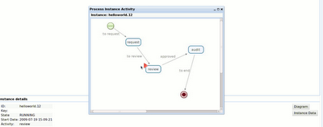
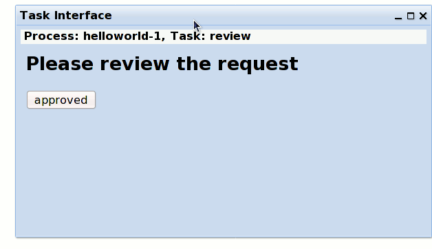

Getting Started with jBPM 4.0 (Part IV)
As said in part III, we will revise our example, to create the task form, and then use the jbpm console to take or complete the task.
Firstly, because there was a minor issue related to this feature, which was reported here in the jBPM jira, we will use the 'form' attribute in the jpdl file.
Add the task form template
Here, we will create a freemarker template file, named review.ftl. the files content is as following:
Add the form attribute in task node
As we said earlier, due to the JBPM-2423 issue in jBPM 4.0 GA, we need to update our jpdl to associate our task form template. the updated section is as following.
Update the build.xml, to include the .ftl file in .bar archive
The last step would be to update our build.xml, to include the ftl template file, and also include the png file for the diagram show usage in our jbpm console. The updated bar package built script is:
That is it, now you can re-deploy it into the jBPM server, like we said in the part3.
Task Form in jBPM console
well, after we started the process instance, let's see the diagram and the task form in its console UI.
On the process instance tab, click the 'diagram' button in the instance details page, you would see page as following picture.

Go to the task list -> Personal tasks, you would see there is a task, the name is called "review", select the task and click the 'view' button, it would pop up the task form interface as following picture:

Once you click the 'approved' button, the task is completed, and the whole process goes to the 'audit' state as we've defined in the jpdl file.
So, that is all for the task form example. If you want to know more about the template, like syntax, you can refer to the freemarker webiste.
One thing interesting is that there is a console-server, which is the jbpm console talk to, the console server is responsible for exposing the jBPM service as a RESTful services. You can go to "http://localhost:8080/gwt-console-server/rs/server/resources" to see all available resources. we won't go detail in this entry, this is an interesting topic that we will cover in the future blog entry.
Summary
Until now, this 《Getting Started with jBPM 4.0》series is finished, you can download the jbpm-helloworld example as a tar ball from here. Its aim is to help you get started, if you want to know more about jBPM 4.0, the userguide and dev guide are very good documents, and you also shouldn't miss the jbpm user forum.